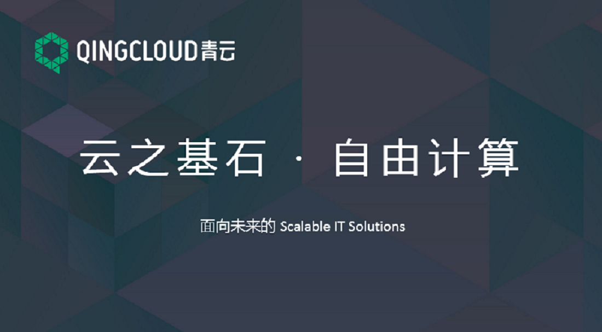
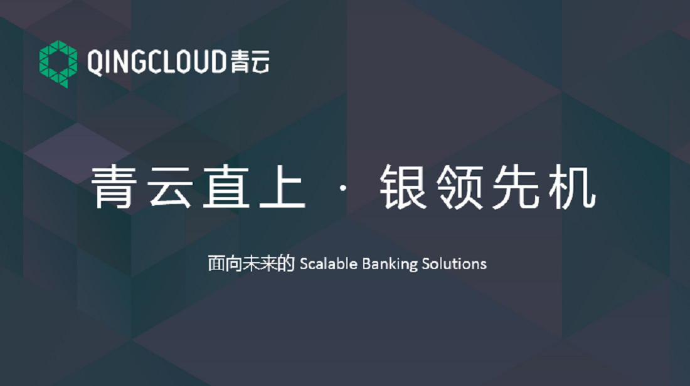
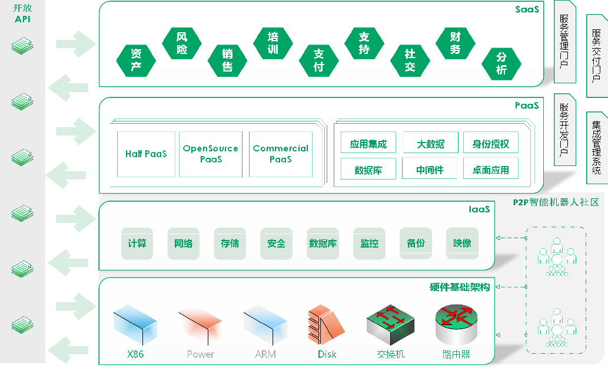
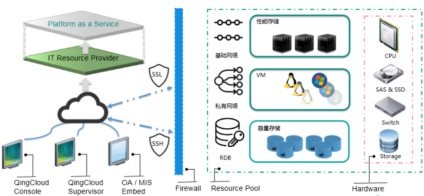
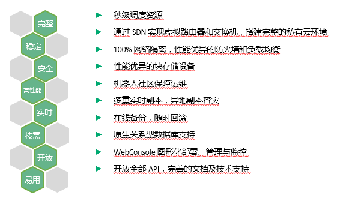
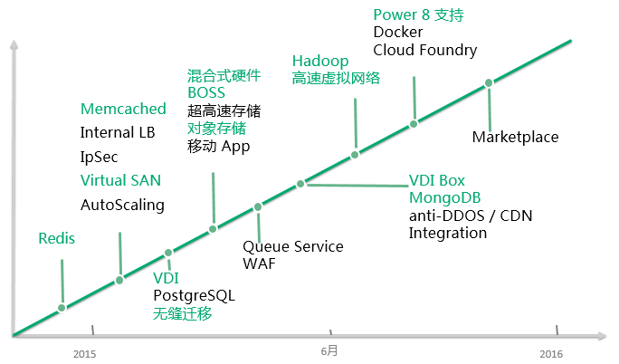

青云

青云简介
-
青云是一个提供按需分配、弹性可伸缩的计算能力的公有云服务。通过使用青云， 您不必再为了软件开发、测试、以及应用/服务上线运行而购买物理设备了， 也不必投入人力物力进行设备维护。 您可以直接在青云中迅速得到任意您需要的计算、存储、网络、安全等方方面面的能力， 并可以随时调整它们的规模。
-
青云执行按用量收费原则，即，您只需要为您使用了的资源付费。 而且，青云是按秒计费的，青云中的任何资源都是可以随时调整尺寸/规模的， 这最大程度地降低了您的费用、并为弹性计算提供了计费基础。
主要概念
为了便于后续使用，简要介绍几个主要的概念， 以及它们与您现有计算环境中元素的相同、相异点。
-
映像和主机
-
映像（Image）是一个包含了软件及必要配置的机器模版。 作为基础软件，操作系统是必须的，您也可以根据自己的需求将任何应用软件 （比如，数据库、中间件等）放入映像中。
-
映像分为两类。其一是青云官方提供的，称之为“系统映像”， 包括了各种 Linux、Windows 等操作系统， 各系统映像的初始本地终端用户名和密码均可在各映像的详情描述中找到。 其二是用户通过捕获一个主机来自行创建的，名为“自有映像”， （需要注意，主机在关机状态下才能被捕获为映像）。 系统映像全局可见可用，自有映像只有用户本人可见可用。
-
主机（Instance）是以虚拟机器的形式运行在青云中的映像副本。 基于一个映像，您可以创建任意数量的主机。在创建主机时， 您需要指明 CPU 和内存的配置。青云允许您任意指定 CPU、内存的数量， 也允许您在主机创建之后随时再行调整。
-
区域
-
青云是一个多区域部署的服务。初始部署于北京，将逐步增加区域供应 （上海、广州等重点节点）。您可以在不同区域创建云资源（比如主机等）， 以迎合您不同的市场和客户，或者在多地进行均衡等。
-
因为获取物理资源的成本不一，所以每个区域的价格都略有差异。 请查询价格列表，以了解更多。
-
存储
-
正如物理世界中的硬盘，在青云中，硬盘（Volume）为主机提供块级的原始存储设备， 它独立于主机的生命周期而存在，可以被连接到任意运行中的主机上， 为主机提供持久化的、块级存储，并可以随时解除连接，转接至其他主机， 如此可以实现数据的快速转移。
-
青云提供了两种规格的硬盘：容量型硬盘、性能型硬盘。 性能型硬盘的性能可达128MB/s，适用于对IO要求较高的应用，例如数据库等在线业务; 容量型硬盘拥有更大的单块硬盘容积，最高可达5TB，适用于对容量要求较高的应用，例如文档存储等离线业务。
-
除了硬盘，青云还提供了备份服务。备份（Snapshot）用于在块设备级别（block device level）上进行硬盘的备份与恢复， 可以同时对多张硬盘做备份（包括系统盘和数据盘），也可以对正在运行的主机做在线备份。 一张硬盘可以有多个备份链，每条备份链包括一个全量备份点以及多个增量备份点，您可以随时从任意一个备份点恢复数据。
-
网络
-
青云提供了两种组网方式：基础网络、私有网络（VxNet）。 前者是一个由青云系统维护的全局网络，后者是用户各自自行组建的网络
-
基础网络的好处是简单、无需用户做任何配置与管理，即可直接使用， 但正因为它是全局网络，所以其安全保障是依靠防火墙（Security Group）来实现的。 与之相对应，私有网络需要用户创建并管理 （当然，为了简化管理，青云提供了路由器来帮助用户）， 但私有网络之间是100%隔离的，以满足对安全的100%追求。
-
私有网络类似物理世界中使用交换机（L2 Switch）将多台服务器连接在一起， 组成的局域网。它有两种管理方式：受管（Managed）、自管（Unmanaged）。 路由器用于多个受管私有网络之间互联，并提供三项附加服务： DHCP 服务、端口转发、VPN 隧道服务，涵盖了常用的网络配置与管理工作。 如果青云提供的路由器功能无法满足您对网络管理的需求， 您可以创建自管私有网络，并自行配置和管理该网络。
-
公网 IP 地址是在互联网上合法的静态 IP 地址。 在青云系统中，公网 IP 地址与您的账户而非特定的资源（主机或路由器）关联， 您可以将申请到的公网 IP 地址分配到任意位于基础网络中的资源， 并随时可以解绑、再分配到其他资源，如此可以快速替换您的对外资源。
-
资源监控
-
您使用的主机、硬盘以及网络资源都有监控， 您可以很方便的了解系统运行情况以及分析和定位问题。监控信息分不同的粒度， 从一分钟到一年的历史数据都有，并且还有10秒钟级别的实时数据。

如何使用青云
我们提供了多种方式来使用青云的各项服务。
-
命令行工具
-
命令行工具 CLI 可以让用户更方便地使用我们的 API 接口。
-
APIs
-
青云开放所有 API 以方便用户更高效地使用青云，并鼓励在青云基础上搭建更丰富的上层平台。
充值与计费
-
青云支持在线充值和银行转账，您可以自行选择付款方式。如果需要发票，请到 发票管理 提出申请。
-
青云执行按用量收费原则，即，您只需要为您使用了的资源付费，并且计费是按秒进行的，并且不设最低消费指标。
-
您随时可以在 WEB 控制台中查看 消费记录 。
服务限制
为了保证每个用户都得到公平的计算能力，并防止恶意使用，青云系统有如下整体限制
-
磁盘 IO 限制为 128 MB/s
-
内部网络带宽限制为 512 Mbps，峰值为 1 Gbps
-
从资源数量角度，每个用户可以使用 5个主机、5个自有映像、5个容量型硬盘、5个性能型硬盘、 10个SSH密钥、10个防火墙、5个私有网络、2个路由器、2个公网IP、2个负载均衡器
-
从元件角度，每个用户可以使用 10个 CPU、20GB 内存，10Mbps 的带宽，500GB 的容量型硬盘，500GB 的性能型硬盘
-
以上限制均为全局设定，其目的仅仅是为了防止资源滥用，如果您需要超过这些限制的计算能力， 与我们联系 即可扩大指标。
账号安全
用户在青云上的资源是重要的 IT 资产，因此青云非常重视用户账号的安全性。您可以在青云系统的账号安全中心管理和强化账号的安全属性，包括
-
修改登录密码
-
开启除密码登录外的二次认证策略
-
账号多次密码登录失败、二次认证口令失败时的短信通知
-
关闭浏览器的会话保持，临时登录系统后退出浏览器，不记录登录状态
青云 QingCloud 智能云基础架构管理平台

青云智能云基础架构平台

QingCloud 技术优势

技术与产品 RoadMap
